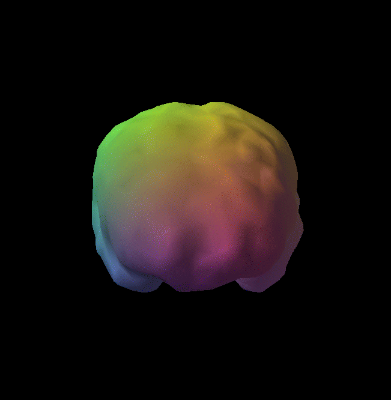
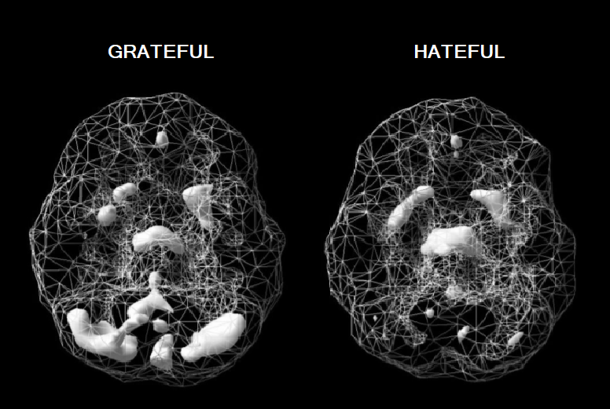
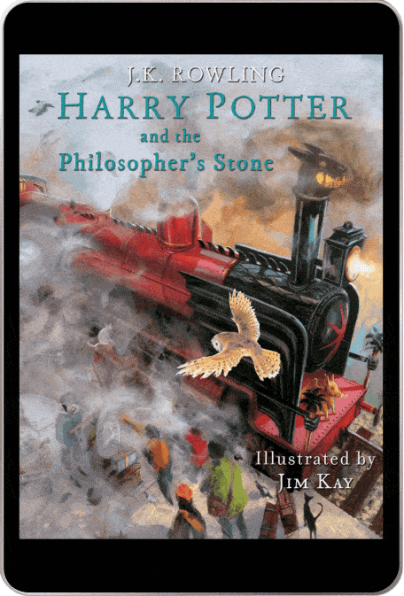
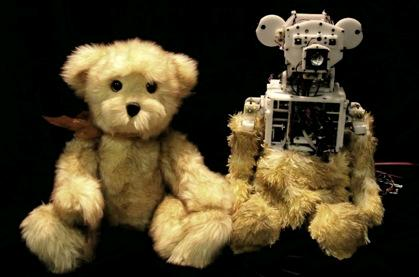

INTEREST IN IT
1) What is your interest in IT?
Artificial Intelligence, Machine Learning and Quantum Computing. Those fields are fascinating, almost magical (quantum tunnelling and entanglement is like something straight out of an Alice in Wonderland book). These technologies will completely revolutionise the world. Imagine an AI superintelligence that is smarter than all the humans that ever existed. What will AI be capable of? Will Earth transform into a paradise where humans are free of disease, pollution and poverty? A peaceful world is a possibility. Much like the development of classical computers, where the offshoot technologies of mobile phones and laptops were not predicated, it is hard to know what technologies will be developed from quantum and AI research.
2) When did your interest in IT start?
I’ve loved computers all my life. They have dramatically improved our world. A world without computers is foreign to me. Out of curiosity I learnt about Alan Turning, Tim Berners-Lee, Bill Gates, Steve Wozniack, Steve Jobs, Vint Cerf and Robert Khan, but I never learnt about the hardware or software! But recently, I began reading about the emergence of Artificial Intelligence, Machine Learning and Quantum Computing. I've always loved quantum science because I'm curious to know how reality works. These new technologies have motivated me to understand computer science and mathematics. Scientists are creating things that were once only science fiction. It’s an incredible time to be alive.
3) Was there a particular event or person that sparked your interest?
It’s a cumulation of events. I am currently undertaking a Certificate 2 in Electrotechnology and learning all about circuits and electricity. I thought about becoming an electrical engineer or electrician. My teacher told me to study programming because the emergence of the Internet of Things will make it necessary. I also read and watched a lot of books and documentaries related to computers. Here’s a list of my favourites:
1) The Elegant Universe by Brian Green
2) Life 3.0 by Max Tegmark
3) Superintelligence by Nick Bostrom
4) Programming the Universe by Seth Lloyd
5) Our Mathematical Universe by Max Tegmark
6) Ghost in The Wires by Kevin Mitnick
7) Digital Fortress by Dan Brown
8) Jurassic Park by Michael Crichton
We have well and truly entered the computer age. Over the last 20 years there have been many break-throughs in technology and the future looks bright. I hope I’m alive to see AI superintelligence. I believe it’s important to be computer literate, appreciate technology and use it in a safe and appropriate manner.
4) Why did you choose to come to RMIT?
RMIT is one of the best universities in Australia to study computers and engineering. My sister studied Civil Engineering at RMIT and many friends are RMIT graduates. RMIT has a great reputation for high quality education throughout the world and their facilities are modern and outstanding. RMIT is working with ARC Centre of Excellence for Quantum Computation and Communication Technology as well. RMIT offers a computer science course completely online and their platform is easy to navigate.
Link: RMIT.Quantum
5) What do you expect to learn during your studies?
I’d like to learn as much as I can about computer science. I want to have a deep understanding of the following: Java, JavaScript, Python, C, C++, computer hardware, robotics, artificial intelligence, data science, mathematics, machine learning, quantum computers, logical thinking, leadership and teamwork skills. I’m particularly interested in gaining knowledge on AI and quantum computers. I’d also like gain practical experience in these fields.

IDEAL JOB
The job advertisement: IBM Quantum Reseacher: LINK: IBM.Job PDF: IBM.pdf
1) The position:
IBM is a leader in quantum research and artificial intelligence (IBM Watson). The company is developing a full-stack quantum computer, consisting of all relevant hardware and software. I’d like to join a team that is dedicated to applying science to some of today's most complex challenges, including medicine, environmental pollution and wildlife conservation.
This position ticks all my boxes. It is for a person interested in quantum circuits, superconducting qubits, quantum software architecture, cryoelectronic circuit design, quantum microwave engineering, and quantum engineering.
2) Skills, qualifications and experience required for the position:
The researcher must possess at least a graduate qualification in computer science, at least two years’ experience as a quantum computing researcher and five years’ experience in computer science research. The researcher must have skills related to quantum circuits and an ability to solve algorithmic problems and coding (in C/C++, Python). Responsibilities include developing algorithms and tools to improve IBM’s compiling platform, publishing research results, and collaborating with other researchers.
3) The skills, qualifications and experience I currently have:
I’m studying computer science at university, getting certificates in electrotechnology, AI and Python (IBM courses), learning about quantum mechanics/computing (via MIT, Cousera), and applying for work-experience positions. Building quantum systems is still in its infancy and but the demand for quantum computing researchers is increasing.
5) A plan to obtain the skills, qualifications and experience required for the position:
Step 1: Get a graduate degree in Computer Science – be fluent in the major computer languages.
Step 2: Learn mathematics for machine Learning, AI and quantum mechanics from online courses (MIT, IBM, Google). Learn quantum computing.
Step 3: Learn about electronics (get a Certificate 2 and 3 in Electrotechnology). Take subjects in Electrical Engineering/Mechanical Engineering.
Step 4: Gain experience in the field of quantum computers. Apply for work-experience at various companies dealing with quantum computers, AI and machine learning.
PROJECT IDEA
OVERVIEW
The format and delivery of education has remained largely unchanged for the last 100 years. Mobius Education (named after the surface with only one side) transforms the subject of mathematics into a journey of wonder, fun and exhilaration. It's maths education for the 21st century child using the latest technologies including machine learning, AI, virtual reality, augmented reality, gaming, animation and HD video including animated eBooks. The student (player) is transported from their classroom into worlds where they see how maths really works. No more tedious, boring classrooms where teachers talk for hours and scribble on the blackboard. At Mobius, children learn maths in an interactive and natural manner, making them fall in love with the beauty of formulas and calculations. By the end of the course, students will achieve a high level of mathematical fluency and be able to flourish in an ever evolving world.
MOTIVATION
Maths fluency is low
Maths is a language, like English, but even employed people have problems understanding and speaking it. According to data from ‘Programme for the International Assessment of Adult Competencies (PIAAC),’ employed people aged 15 to 64 years who worked in 'Professional, Scientific and Technical Services' had numeracy skills that were high (70% at Level 3 or above), but those working in Construction, Administration and Manufacturing were low (44%, 39% and 42% at Level 3 or above respectively).1
Numeracy levels among the general Australian population (both employed and unemployed), were low. Close to 6.5% (1.1 million) of Australians had numeracy skills at Below Level 1, 15% (2.5 million) at Level 1, 32% (5.4 million) at Level 2, 31% (5.2 million) at Level 3, 11% (1.8 million) at Level 4 and 1.4% (230,000) at Level 5.1

Figure 3. Proportion of Australians at each numeracy level(2011-12)1
Costs of innumeracy
Mathematics has allowed society to advance to a point where the average lifespan for a child born in 2000 is 100 years old.3 Without mathematical skills, engineering and science will not progess as rapidly as it could. Today there is growing shortage of qualified people in the STEM fields. Much of this has to do this a lack of mathematical knowledge. To The major problems of the world - pollution, poverty, overpopulation, diseases will only ever be solved by mathematics.
The inability to rationally understand statistics, large numbers, graphs and probabilities has also resulted in a population that can be easily manipulated and misinformed in areas of great importance - governmental policies, personal life decisions, medicine and finance. Pseudoscience and conspiracy theories are rising and the recent Covid-19 pandemic has highlighted this well. It is more crucial than now than ever to possess a clear, logical way of looking at the world. It is literally a life or death situation at the moment. Lastly, mathematically competant people tend to be wealthier. People with higher scores in numeracy make more money from wages and salaries. In the PIAAC study, 89% of Australian higher income earners had a numeracy level of 3 or higher, compared to only of 29% of low income earners.1
DESCRIPTION
THE DESIGNER COURSE: Neuroimaging and Psychometric test
The Mobius Maths is a custom designed course for Prep to University students using the latest technologies with lifetime access. To personalise maths education, each child firstly undergoes a single photon emission computed tomography (SPECT) scan to see how blood flows to their brain. We check for any abnormalities and problems every year and enter the data into a brain bank which the student can access on our online platform. A healthy, well-functioning brain is the foundation of education and a happy life. When the brain is troubled, a child will struggle to be their best selves. Based on the results, the child will be given an AI designed brain diet including supplements (Omega 3 fatty acids, multi-vitamins, etc) and an exercise regime to maximise performance. The food that we eat and the amount of exercise we do has a profound effect on how our brain functions.2

Figure 2. SPECT scan of a healthy brain.2
Afterwards, the child takes a psychometric test, beginning in Prep and every 6 months afterwards till they finish the course. The results will be part of a training data set for AI to learn from. Algorithms will generate a personalised course suited to the child’s character, personal interest and learning style. As the student changes and grows, so too does the course, creating a flexible and ever evolving learning environment. She can learn and progress through the course at her own speed. Learning is not a race. Having a deep understanding of maths is the priority at Mobius.
A PERFECT TEACHER: An AI digital assistant
Far too many students sit in a classroom, surrounded by thirty other students, receiving little to no attention from their teacher. At Mobius Education, each child has their own intelligent virtual teacher called MoBi, who guides them through the course till they complete it (with 100% pass rate per level to ensure there are no learning gaps and the student advances with ease). Mobi ensures the child never feels alone or disorientated. MoBi is similar to Siri, an intelligent assistant from Apple Inc.3 He has a natural-language user interface.

Figure 3. Apple's Siri. An AI virtual assistant.2
MoBi, however, is also equipped with latest data in psychology, biology, neuroscience and of course mathematics (by ingesting all the research papers and books available) as well as the child's input data given during each pyschometric test. Not only will he be able to organise his students maths course and keep track of her progress, he'll be able to hold an intelligent, meaningful and emotionally rich two-way conversation with her. MoBi can even tell you a joke.
He'll be able to adjust and morph into any character (a warrior, an alien, a character from a favourite book, or even a talking car like Kitt4) to better understand and connect with his student. MoBi will even be able to take physical form using our other products (our computerised teddy bear). As the child's personality and learning style changes, so to will the MoBi. He will synchronise and align conversations with the interests of the maturing child. MoBi is not only the student's guide, but also her friend. He will boost the her self-esteem, confidence and learning ability, ensuring she excels not only in maths, but in life. MoBi will be the child's confidant during the learning journey. This personal touch is often missing in today's education.
IT'S PLAY TIME: Games, Cartoons, ebooks, VR, AR, Collector Cards, Comics, Movies, T.V Shows and Toys
At Mobius Maths, we take fun seriously. Education is a positive, playful and entertaining experience. Obtaining knowledge is about understanding and appreciating the world, being curious and solving problems. When we are children, we learn to speak a language so we can communicate and express our feelings to our family. It was an easy, immersive and interactive experience. We didn't even realise we were learning such a complex subject with it's own grammer and syntax. Maths needs to be taught in a similar manner. However, the current school system concentrates on rote memorisation and competition, two things that create anxiety and a hatred of the subject. Negative thinking decreases blood flow to the brain and makes it harder to think.2

Figure 3. SPECT scan of an individual feeling grateful and hateful.2
At Mobius, creativity and enjoyment is at the core of our learning experience. Today, the most common tool for complex maths visualization in the classroom is the TI-84+ calculator. That's why at Mobius we've developed a blended learning model that captures a child's attention and helps them visualise maths, the key to truly understanding it. The maths skills they gain are applicable to the real world.
Our products include:
Games: Traditional, Augmented Reality and Virtual Reality:
Our gaming platform simulates different experiences for each grade level. We encorporate traditional gaming styles, as well as the latest in virtual and augmented reality.4 As an industry, video games generated $US119.6 billion in revenue during 2018,3 and the demand for thrilling games is only increasing. The ever popular Pokemon Go has 60 million active users per month.3 At Mobius, we have thousands of high quality simulations to choose from, and all are easily manipulated to suit an individual student i.e. AI designs the game with the child.
Maths games aren't simply about doing equations. Each product explores a different part of our world. It's hands on and practical. For example, children interested in space technology can help build a space rocket at NASA, then learn calculus and trigononmetry like in the Kerbal Space Program.2 A child excited by war games can help orchestrate an army to destroy an enemy, then learn about statistics and probability. The child's imagination is the only limit.

Figure 4. Pokemon Go: An AR game.4
Ebooks, Comics and Collector Cards: Augmented Reality, Animated and Self-talking:
No more lugging around heavy text books. At Mobius, each child has their own digital library for a lifetime. Books are an important part of the learning experience. Creative stories are how we communicate to the world and convey information. Taking a lesson from Harry Potter, one of the world's best-selling children's book series with over 400 million copies sold,5 we at Mobius have created a line of entertaining children's books with characters that move, speak and even jump out of the book (via augmented reality). Auto-reading features allows the student to follow along at whatever speed they find comfortable, while a natural sounding voice reads to them.

Figure 5. Harry Potter and the Philosopher's Stone illustrated animated ebook.6
We also have a range of mathematical collector cards (digital and paper) that are illustrated, animated and use AR technology. Inspired by the Pokemon Collector Cards, the Mobius Collector Cards feature a range of cute Anime characters for young children and beautiful illustrations for older students.
Movies and Series: Documentaries, T.V. Shows and Cartoon Series:
People are spending more time streaming video content.4 Entertaining cartoons are an effective learning tool for teaching maths to young children and adults alike. Colourful animations mixed with funny, novel and emotionally charged storylines increases memory retention.6 At Mobius, we have an exciting range of cartoons to suit every taste, including Pixar-styled animations with 3D rendering. For older students, we have a range of maths documentaries that rival PBS and Discovery Channel. They educate the student on everything from Sir Isaac Newton's discovery of Calculus to Maxwell's equations for electricity. All topics are covered and easily accessed on our website or other streaming platforms including Netflix, Amazon, YouTube and Facebook.
Toys: Electronics, Robotics and 3D-Printing
Mobius Education encorporates toys and the 'Internet of Things' into learning such as our talking tedddy bear, robot, warrior, car, jewellery, watch, jumper etc. It enables MoBi to take a 3D physical form in the real world and interact with the child through touch. For example, through the teddy bear, MoBi can give the child a hug. The child can now take MoBi anywhere there is wireless internet connection, so learning doesn't have to stop at the desk, but can move anywhere the child wants to go.
We also have a range of 3D printed mathematical toys to further help a child visualise mathematics ranging from simple blocks and triangles to knot theory, regular polyhedra and four-dimensional spaces.

Figure 6. MIT Media Lab's Huggable teddy bear.4
TOOLS, TECHNOLOGIES AND SKILLS
Integrating all these applications onto one user-friendly online platform requires a lot of technologies to work seamlessly. To create these products, computers that have Windows, Mac or Linux installed with high-speed internet access (4G or 5G) are needed.
MoBi the Virtual Teacher:
The virtual teacher works primarily on five technologies; Machine Learning, Computer Vision, Speech Recognition, Natural Language Processing (NLP) and Deep Learning. IBM Watson can be trained using a large datasets in order to create efficient
A prototype of MoBi can be built (for free) using IBM Watson Assistant services. Here, an AI conversational agent, i.e. a chatbot, can be created. Using IBM Watson Speech to Text and Text to Speech services, the chatbot can talk with the user via text or voice commands in a natural language conversation. It can also be trained to learn from user inputs. Watson Assistant service is hosted on the IBM Cloud platform.
Skills required:
An understanding of Python, artificial intelligence, machine learning, data analysis (including how to input data to avoid a bias output), Natural Language Processing, linear regression, statistics and probability.
Links: Machine Learning: IBM.Machine and Assistant: IBM.Assistant
Website:
Developing a user-friendly platform that hosts all the Mobius products, including high quality video streaming, requires IBM Cloud for servers and data centers. Python coding can be written on Jupyter notebook and HTML5 and CSS on Brackets software. Git software and GitHub can be used for code respositories.
Skills required:
An understanding of Python, HTML5, CSS3, JavaScript, jQuery, Bootstrap, Express.js, React.js, Node.js, Database Theory, MongoDB, MySQL, Command Line and Git.
Links: Jupyter Notebook: Jupyter.Note and Brackets: Brackets.Edit
Ebooks, Comics, Collector Cards, Cartoon, Videos and Games:
Illustration/Animation: Creating colourful digital art and animation requires Adobe Illustrator, Photoshop, Animate and Character Animator. Open source animation software options include Blender (for 3D rendering) and Inkscape. A Wacom Cintiq pen display can be used create digital drawings.
Video: A Canon Camera and video-editing software such as Adobe After Affects, Premiere Pro and Rush can be used to create documentaries. Open source editing software options include Lightworks, VSDC or OpenShot.
Games: Coding can be written in Eclipse or Intellij for Java and in Jupyter Notebooks for Python. Git and GitHub can be used as code repositories. Oculus Rift can be used for virtual reality and Microsoft's HoloLens for Augemented Reality (including Microsoft Azure Cloud and Unity software). IBM Watson can also provide AI services for virtual reality games.4
Skills required:
An understanding of children's literature, digital illustration and animation, filming and video-editing. For gaming, experience with Java or Python, Virtual Reality and Augmented Reality.
Links: Adobe: Adobe.Create and Blender: Blender.Animate
Toys:
Electrical components, a CPU, hard-drive etc can be used to create the robotic teddy bear, warrior, car and IoT products. Movements can be programmed using Java or Python. For the jewellry and clothing, Microsoft Azure can deploy secure, scalable Internet of Things (IoT) applications. 3D Printers (Officeworks offers 3D-printing) with PLA, a biodegradable thermos plastic, can manufacture the math toys. Open source 3D design software includes Tinkercad and Autodesk 123D.
Skills required:
An understanding of electronics, robotics, 3D-design, Python, C, C++ and Java.
Links: Tinkercad https://www.tinkercad.com/ and Azure IoT: https://azure.microsoft.com/en-us/overview/iot/#why-iot
Brain diet/exercise regime:
Using IBM Watson Discovery, research papers on nutrition and can be
Skills required:
An understanding of artificial intelligence, machine learning, data analysis (including how to input data to avoid a bias output), Natural Language Processing, linear regression, statistics and probability.
OUTCOMES
Know more maths, make more money: People with higher scores in numeracy made more money from wages and salaries. Of people employed full time who were in the highest income group, 81% had a numeracy Level 3 or above, compared to 29% of people in the lowest income group Costs of innumeracy: And what are the costs of innumeracy? The inability to rationally understand statistics, large numbers, graphs and probabilities has resulted in a population that can be easily manipulated and misinformed in areas of great importance - governmental policies, personal life decisions, medicine, technology, education, agriculture and finance. Pseudoscience and conspiracy theories are rising and the recent Covid-19 pandemic has highlighted this well. It is more crucial than now than ever to possess a clear, logical way of looking at the world.
ABOUT
Name: Dhilrukshi (Dee) Pathmanathan
Student number:s3128962
Student email:s3128962@student.rmit.edu.au
Nationality: Australian Sri-Lankan
Education: VCE, Certificate IV in Small Business, undertaking a Certificate 2 in Electrotechnology and Bachelor of IT.
Languages: English and Tamil.
Hobbies: I just started getting into electronics. I love to play sports of all kinds, especially badminton and swimming. I love scuba diving in the Great Barrier Reef and once met a pod of dolphins. Night diving is a beautiful experience and I’d love to do more all over the world. I really want to see a whale shark too.

Personal Profile We offer full-service catering for any event, large or small. We understand your needs and we will cater the food to satisfy the biggerst criteria of them all, both look and taste.
PERSONALITY
The results of the Myers-Briggs test:
I am an Advocate Personality INFJ-A:
Advocates are likely to find that most corporate career paths are not designed for them, but for those focused on their status and material gain. However, people with this personality are able to find work that suits them in just about any field. Advocate personalities need to find meaning in their work and to know that they are helping and connecting with people.
The results of Honey & Mumford learning style test:
My Primary Learning style is a equal mixture of Pragmatic/Theorist/Reflector:
Pragmatists need to be able to see how to put the learning into practice in the real world. Pragmatists are likely to be experimenters, trying out new ideas, theories and techniques to see if they work. Learning methods especially suited to pragmatists include: Practicals, Case studies, Problem setting and Discussions.
Theorists like to think through problems in a logical manner. They value rationality and objectivity, and like to assimilate disparate facts into coherent theories. They are disciplined, aiming to fit things into a rational order. Learning methods especially suited to theorists include: Models, Classroom response systems, Story-telling, Quotes.
Reflectors prefer to stand back and observe. They tend to be cautious, preferring to take a back seat. They like to collect and analyse information to help them reach their conclusions, which they may take considerable time and effort to develop. Reflectors see the big picture by using information gathered from previous experience as well as the here and now. Learning methods especially suited to reflectors include: Paired discussions, Self-analysis questionnaire, Demonstrations, Coaching.
The results for Helen Fisher’s neuro-chemical based personality test:
My primary personality type is Director (Testosterone dominant brain system):
DIRECTORS shoot for the stars. These men (and women) express traits linked with the testosterone system in the brain. They tend to excel at analytical and strategic thinking. They are also direct, decisive, exacting and tough minded. Directors are good at what scientists call “rule-based systems,” aptitudes such as higher math, mechanics, computers, engineering and/or music. And they are often competitive, as well as skeptical and emotionally contained.
My secondary personality type is Builder (Serotonin dominant brain system):
BUILDERS are pillars of society. Most likely highly expressive of the serotonin system in the brain, they are traditional and conventional, as well as cautious, calm and often social. These men and women like to build networks; community and family are important to them. They make good managers because they are orderly, conscientious, thorough and loyal. And they respect rules and like schedules. Builders seek a stable and predictable team player, someone who shares their fidelity to family and tradition
REFRERENCES:
1) Abs.gov.au. 2020. 4228.0 - Programme For The International Assessment Of Adult Competencies, Australia, 2011-12. [online] Available at: https://www.abs.gov.au/ausstats/abs@.nsf/Lookup/4228.0Main+Features402011-12 [Accessed 13 September 2020].
2) Amenclinics.com. 2020. Mental Healthcare Clinic Focusing On Your Brain Health | Dr. Amen. [online] Available at: https://www.amenclinics.com/ [Accessed 13 September 2020].
3) Apple (Australia). 2020. Siri. [online] Available at: https://www.apple.com/au/siri/ [Accessed 13 September 2020].
4) Nanome.ai. 2020. Calcflow By Nanome. [online] Available at: https://nanome.ai/calcflow/ [Accessed 13 September 2020].
5) En.wikipedia.org. 2020. KITT. [online] Available at: https://en.wikipedia.org/wiki/KITT [Accessed 13 September 2020].
6) Webb, K., 2020. The $120 Billion Gaming Industry Is Going Through More Change Than It Ever Has Before, And Everyone Is Trying To Cash In. [online] Business Insider Australia. Available at: https://www.businessinsider.com.au/video-game-industry-120-billion-future-innovation-2019-9?r=US&IR=T [Accessed 13 September 2020].
7) Kerbalspaceprogram.com. 2020. Kerbal Space Program – Create And Manage Your Own Space Program. [online] Available at: https://www.kerbalspaceprogram.com/ [Accessed 13 September 2020].
8) Fortune. 2020. Harry Potter At 20: Billions In Box Office Revenue, Millions Of Books Sold. [online] Available at: https://fortune.com/2017/06/26/harry-potter-20th-anniversary/ [Accessed 13 September 2020].
9) Phys.org. 2020. MIT's Huggable Robot Teddy Enhances Human Relationships. [online] Available at:
9) National Institutes of Health (NIH). 2020. How Novelty Boosts Memory Retention. [online] Available at: https://www.nih.gov/news-events/nih-research-matters/how-novelty-boosts-memory-retention#:~:text=If%20something%20novel%20grabs%20your,have%20a%20memory%2Dboosting%20effect. [Accessed 13 September 2020].
10) Business of Apps. 2020. Pokémon GO Revenue And Usage Statistics (2020). [online] Available at: https://www.businessofapps.com/data/pokemon-go-statistics/#:~:text=Apptopia%20Pok%C3%A9mon%20GO%20stats%20showed,12%20million)%20were%20active%20daily. [Accessed 13 September 2020].
11) WIRE, B., 2020. Global Animation & VFX Industry Report 2020-2025: Demand For Animation & VFX Content To Power Immersive Experiences Such As AR & VR Is Growing Exponentially - Researchandmarkets.Com. [online] Businesswire.com. Available at:https://www.businesswire.com/news/home/20200131005198/en/Global-Animation-VFX-Industry-Report-2020-2025-Demand [Accessed 13 September 2020].
12) IBM MediaCenter. 2020. Developing Virtual Reality Video Games With Watson. [online] Available at: https://mediacenter.ibm.com/media/Developing+virtual+reality+video+games+with+Watson/0_hryyj8mq> [Accessed 15 September 2020]